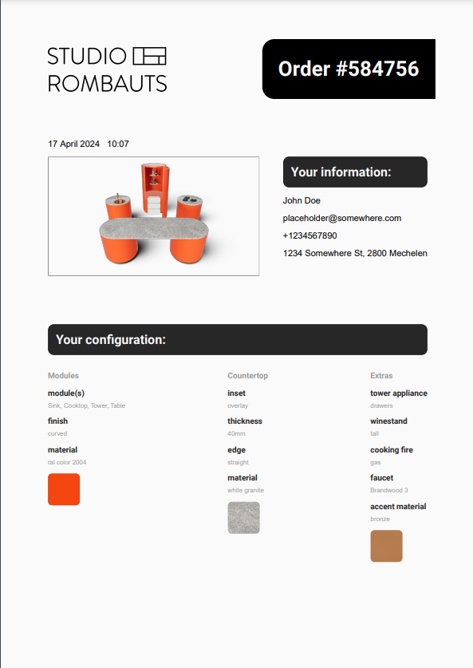
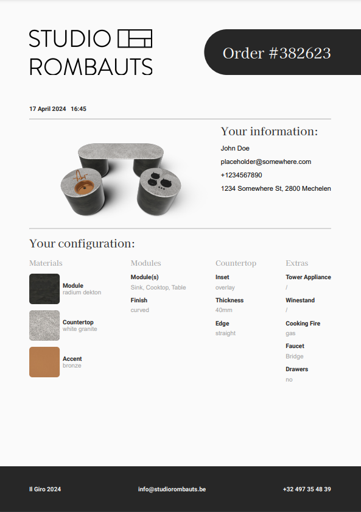

Ding ding ding. Nog 12 stagedagen over. 😱
Het verbeteren van de UI is een opracht die nooit lijkt te eindigen. Ik heb empty states toegevoegd voor als de pagina leeg is (in 1 geval kan dit in de configurator), en ik heb extra info tekstjes toegevoegd waar nodig. Ik heb nog meer paddings en margins aangepast en ik heb scheidingslijnen toegevoegd.
Ik heb ook alcohol toegevoegd aan het project. Niet voor mezelf maar om te tonen hoe het wijnrek eruit ziet met een glazen fles whiskey en een grote fles wijn.
De klant vertelde ons plots aan de telefoon dat de wasbak van de keuken altijd inox is als het tafelblad inox is. Deze aanpassing valt op zich wel te maken, niet al te moeilijk, maar toen zei hij ook dat de wasbak aan het tafelblad moest gelast worden als deze inox zijn. Ik had dit niet voorzien en moest hierdoor een nieuw tafelblad model maken en de wasbak aan het tafelblad lassen, en dit dan conditioneel toepassen.
Iets anders dat de klant wou is een colorpicker met RAL kleuren voor als de gebruiker een microtopping of lakwerk als materiaal neemt. Dit leek me niet zo simpel want er zijn 2540 RAL kleuren maar er zijn meer dan 16 miljoen kleuren in RGB. Ik kon dus geen gewone colorpicker gebruiken. Gelukkig had mijn collega Lisa al met RAL kleuren gewerkt in een ander project. Ik kreeg van haar een JavaScript bestand met alle RAL kleuren waarbij telkens hun ral-code, hex waarden en RGB waarden stonden. Omdat ik zelf geen colorpicker wou schrijven heb ik dan react-color gebruikt. Dit is een library van colorpickers die je kan gebruiken in React. Ik had het idee om de data te halen uit het bestand van Lisa en dit te gebruiken als de kleuren voor de colorpicker. Dit werkte ook vanaf de eerste keer. Daarna heb ik ook nog een inputveld toegevoegd zodat je manueel een RAL code kunt invoeren.
We verwachten niet dat de meeste gebruikers op mobiel zullen werken, maar we willen wel natuurlijk dat het werkt mocht dit het geval zijn. Ik heb tijd gestoken in de CSS responsive te maken voor mobile. Hiernaast heb ik ook er voor gezorgd dat de 3D scene zich responsive gedraagt. Ik kwam op het idee om de gebruiker meer zoom te geven als deze op mobile is, zo kan die meer zien op een klein scherm. Ookal is het dan minder gedetaileerd, het volledige plaatje zien is nog altijd belangrijker.
Voor optimalisatie en de code properder te houden heb ik een component gemaakt dat het materiaal is van een object. Hierdoor moest er niet meer telkens in elk object een materiaal aangemaakt worden en aangepast worden. Ik moest er dan ook natuurlijk op letten dat dit component ook responsive is en dat de kleur van het materiaal aangepast kan worden als er een RAL-compatibel materiaal is gekozen, en niet elk object mag dan deze kleur krijgen (je wilt geen fluo-roze kraan hebben natuurlijk). Hiervoor heb ik een voorbeeld gekregen van mijn collega's, en dit moest ik wel nog zwaar aanpassen om het te laten werken zoals ik het wou.
Toen ik hiermee bezig was merkte ik op dat de pagina met de materiaalselectie heel traag inlaadde. Dit kwam omdat de selectievakjes voor de materialen de afbeelding gebruiken van het materiaal. Dit is niet altijd een probleem, maar wel als je fotorealistische material gebruikt waarvan de kleur-texture enkele megabytes is. Dit kan natuurlijk niet als je een kleine laadtijd wilt hebben. Daarom heb ik van elke kleur-texture een preview webp met compressie gemaakt. Dit bracht bijvoorbeeld op een van de materialen de grootte van 5mb naar 15kb.
Iets dat ik nog niet had toegepast was het feit dat de tafelbladen verschillende diktes kunnen hebben, en ze kunnen dan ook nog eens in de module inliggen of erop liggen, afgerond zijn of recht. Dit was een uitdaging om te implementeren en ik ben blij met het resultaat. Hier heb ik eigenlijk minder lang aan gezeten dan ik had verwacht. Ik kijk er niet naar uit om het te moeten implementeren, maar als ik er op terugkijk dan viel het echt wel mee.
Ik heb de PDF ook veel verder uitgewerkt. Ik heb de layout hard aangepast en het document responsive gemaakt op nieuwe data.
 